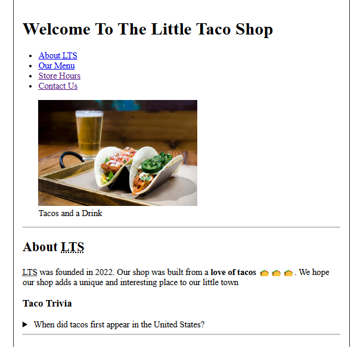
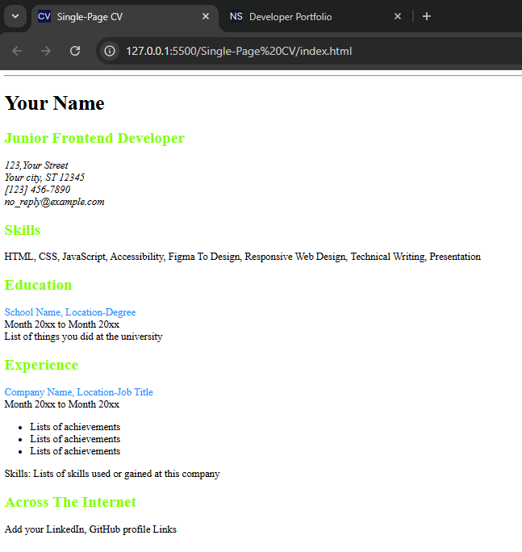

I am a motivated learner with a growing interest in front-end web development. I am currently building my skills in HTML, CSS, and modern web standards through self-study and hands-on practice. Alongside my academic and teaching responsibilities, I am committed to developing practical projects that strengthen my problem-solving ability and technical understanding. My goal is to continue improving my skills, build real-world websites, and use technology as a pathway toward long-term financial stability and personal growth.
2,Ganiyu Adeleke Street,
Market Bus-stop,
Lagos State,
Nigeria.
Foundational knowledge of HTML and modern web standards, including proper document structure, semantic elements, links, lists, images, and basic page navigation.
Ability to write clean, well-indented, and nested HTML code that follows best practices.
Experience using the W3C Validator to identify and fix HTML structure and semantic issues.
Understanding of metadata, attributes, favicons, internal page linking, and basic accessibility concepts.
Growing awareness of web accessibility, including semantic HTML and appropriate use of ARIA attributes.
Ability to structure simple multi-section webpages in a clear and readable way.
Strong self-learning skills, using resources like MDN Web Docs, YouTube tutorials, and roadmap.sh to guide progress.
Good problem-solving mindset, persistence, and commitment to continuous improvement.
Featured Projects
Little Taco Shop

Landing page for a fictional taco restaurant.
Description:The Little Taco Shop is a three‑page HTML site for a fictional taco restaurant. The homepage features navigation links (About LTS, Our Menu, Store Hours, Contact Us), a hero image, an About section, and a Taco Trivia area using <details> for collapsible questions. Separate pages present the full menu and the shop's opening hours and contact information.
Tech: HTML
Single-Page CV

Landing page for a Single-Page CV
Description:A single‑page CV built with semantic HTML, showcasing my name, role, skills, education, experience, and links across the internet. The page includes SEO meta tags, Open Graph tags, and a favicon, and is structured to be easily styled with CSS in later projects.